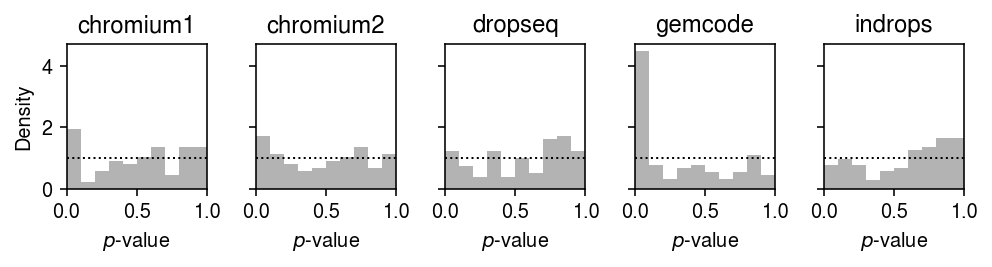
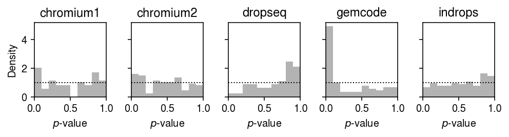
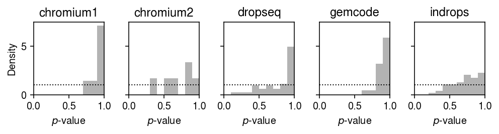
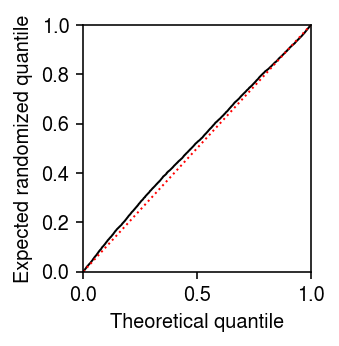

Goodness of fit of deconvolved distributions
Table of Contents
Introduction
We previously estimated the out-of-sample log likelihood as a measure of the generalization performance of distribution deconvolution methods for scRNA-seq. However, this is not the simplest way to support our key results:
- For control experiments, the data do not significantly depart from a unimodal distribution for expression variation (meaning, neither sequencing variation nor expression variation involve a point mass on zero).
- For most genes, in most data sets, the data do not significantly depart from a Gamma assumption.
- When the data do significantly depart from a Gamma assumption, they often do not depart from a unimodal assumption (meaning, departures from Gamma are often not due to excess zeros).
Here, we directly test for the goodness of fit of the estimated distributions (as in Sarkar et al. 2019).
Setup
import anndata import numpy as np import pandas as pd import scanpy as sc import scmodes
import colorcet import os import rpy2.robjects import rpy2.robjects.packages import scipy.io as si import scipy.special as sp import scipy.stats as st import scqtl import sqlite3 ashr = rpy2.robjects.packages.importr('ashr')
%matplotlib inline %config InlineBackend.figure_formats = set(['retina'])
import matplotlib.pyplot as plt plt.rcParams['figure.facecolor'] = 'w' plt.rcParams['font.family'] = 'Nimbus Sans'
Methods
Test for goodness of fit
The key idea underlying our test for goodness of fit is the fact that if \(x_{i} \sim F(\cdot)\), then \(F(x_{i}) \sim \operatorname{Uniform}(0, 1)\). To test for goodness of fit of an estimated \(\hat{F}\) to the data \(x_{1}, \ldots, x_{n}\), we apply the Kolmogorov-Smirnov (KS) test to test whether the values \(\hat{F}(x_1), \ldots, \hat{F}(x_n)\) are uniformly distributed. (This test is slightly conservative because it uses the same data to estimate \(\hat{F}\).)
Here, we have to modify this simple procedure to account for the fact that our data are discrete counts, so \(F\) is not continuous. To address this issue, we used randomized quantiles (Dunn 1996): we sample one random value per observation \(u_{i} \mid x_{i} \sim \mathrm{Uniform}(\hat{F}(x_i - 1), \hat{F}(x_i))\). These have the property that if \(x_i \sim F\) then \(u_i \sim \mathrm{Uniform}(0, 1)\).
In our model, each observed UMI count \(x_{i}\) comes from a different distribution \(F_{i}\):
\[ F_i(x_i) = \sum_{k=0}^{x_i} \int_0^\infty \operatorname{Poisson}(k; x_i^+ \lambda_i) g(d\lambda_i) \]
We therefore draw \(u_{i} \mid x_{i} \sim \mathrm{Uniform}(\hat{F}_{i}(x_{i} - 1), \hat{F}_{i}(x_{i}))\). Then, we apply the KS test to whether the randomized quantiles \(u_{i}\) are uniformly distributed.
Poisson-unimodal goodness of fit
We parameterized the Poisson-unimodal model as:
\begin{align*} x_i &\sim \operatorname{Poisson}(x_i^+ \lambda_i)\\ \lambda_i &\sim \sum_k w_k \operatorname{Uniform}(\lambda_0, a_k) \end{align*}where we abuse notation to allow \(a_k < \lambda_0\). To test for goodness of fit, we need the PMF and CDF of \(x_i\), marginalized over \(\lambda_i\). These are analytic for certain choices of likelihood and prior, e.g. normal likelihood and mixture of uniforms prior.
Simulate a continuous example.
bhat = pd.Series(np.random.normal(loc=0.1, size=1000)) fitn = ashr.ash_workhorse(bhat, 1, mixcompdist='uniform', output=pd.Series(['loglik', 'fitted_g', 'data'])) # Important: Normal-uniform convolution CDF is analytic F = np.array(fitn.rx2('fitted_g').rx2('pi')).dot(np.array(ashr.comp_cdf_conv(fitn.rx2('fitted_g'), fitn.rx2('data'))))
st.kstest(F, 'uniform')
KstestResult(statistic=0.03101662170773789, pvalue=0.28605255994768175)
For the Poisson-unimodal model, we have (for one component):
\begin{align*} x_i &\sim \operatorname{Poisson}(x_i^+ \lambda_i)\\ \lambda_i &\sim \operatorname{Uniform}(a, b) \end{align*}and:
\begin{align*} \Pr(x_i = x) &= \int_0^\infty \operatorname{Poisson}(x; x_i^+ \lambda_i) \operatorname{Uniform}(a, b)\,d\lambda_i\\ &= \frac{1}{b - a} \int_a^b \operatorname{Poisson}(x; x_i^+ \lambda_i)\,d\lambda_i\\ &= \frac{1}{x_i^+ (b - a)} \int_a^b \frac{(x_i^+)^{x + 1}}{\Gamma(x + 1)} \lambda_i^{(x + 1) - 1}\exp(-x_i^+ \lambda_i)\,d\lambda_i\\ &= \frac{1}{x_i^+ (b - a)} \left( F_\Gamma(b; x + 1, x_i^+) - F_\Gamma(a; x + 1, x_i^+) \right)\\ \Pr(x_i \leq x) &= \sum_{k=0}^{x} \frac{1}{x_i^+ (b - a)} \left( F_\Gamma(b; k + 1, x_i^+) - F_\Gamma(a; k + 1, x_i^+) \right) \end{align*}where \(F_\Gamma(\cdot; \alpha, \beta)\) denotes the CDF of the Gamma distribution with shape \(\alpha\) and rate \(\beta\). The marginal PMF is analytic. Computing the CDF for each data point, for each component gives a matrix of values \(\mathbf{F} = [F_{ik}]\). Then, the marginal CDF of the data is given by \(\mathbf{F}\mathbf{w}\).
Simulate a simple discrete example.
y = pd.Series(np.random.poisson(lam=10, size=1000)) s = pd.Series(np.ones(y.shape)) fitp = ashr.ash_workhorse( np.zeros(y.shape), 1, lik=ashr.lik_pois(y=y, scale=s, link='identity'), mixcompdist='halfuniform', output=pd.Series(['loglik', 'fitted_g', 'data'])) scmodes.benchmark.gof._gof(y, cdf=scmodes.benchmark.gof._ash_cdf, pmf=scmodes.benchmark.gof._ash_pmf, fit=fitp, s=s)
KstestResult(statistic=0.018791616085501672, pvalue=0.8718125394494075)
Simulate a Poisson example with varying size factors.
mu = 1e-3 s = pd.Series(np.random.poisson(lam=1000, size=10000)) y = pd.Series(np.random.poisson(lam=s * mu)) fitp = ashr.ash_workhorse( np.zeros(y.shape), 1, lik=ashr.lik_pois(y=y, scale=s, link='identity'), mixcompdist='halfuniform', output=pd.Series(['loglik', 'fitted_g', 'data'])) scmodes.benchmark.gof._gof(y, cdf=scmodes.benchmark.gof._ash_cdf, pmf=scmodes.benchmark.gof._ash_pmf, fit=fitp, s=s)
KstestResult(statistic=0.008062709224521236, pvalue=0.533974089244596)
An alternative parameterization is to assume the log link. For one component,
\begin{align*} x_i &\sim \operatorname{Poisson}(x_i^+ \lambda_i)\\ \theta_i = \ln \lambda_i &\sim \operatorname{Uniform}(a, b) \end{align*}and
\begin{align*} \Pr(x_i = x) &= \frac{1}{b - a} \int_a^b \operatorname{Poisson}(x; \exp(\ln x_i^+ + \theta_i))\,d\theta_i\\ &= \frac{1}{b - a} \int_a^b \frac{(x_i^+)^x}{\Gamma(x + 1)} \exp(\theta_i)^{x}\exp(-x_i^+ \exp(\theta_i))\,d\theta_i\\ &= \frac{1}{x (b - a)} \int_{\exp(a)}^{\exp(b)} \frac{(x_i^+)^x}{\Gamma(x)} \lambda_i^{x - 1}\exp(-x_i^+ \lambda_i)\,d\lambda_i\\ &= \frac{1}{x (b - a)} \left( F_\Gamma(\exp(b); x, x_i^+) - F_\Gamma(\exp(a); x, x_i^+) \right)\\ \Pr(x_i \leq x) &= \sum_{k=0}^{x} \frac{1}{k (b - a)} \left( F_\Gamma(\exp(b); k, x_i^+) - F_\Gamma(\exp(a); k, x_i^+) \right) \end{align*}Data
def read_chromium(sample): x = sc.read('/project2/mstephens/aksarkar/projects/singlecell-modes/data/negative-controls/svensson_chromium_control.h5ad') x = x[x.obs['sample'] == sample] sc.pp.filter_genes(x, min_cells=1) x = x[:,x.var.filter(like='ERCC', axis='index').index] return pd.DataFrame(x.X.A, index=x.obs.index, columns=x.var.index) def read_dropseq(): x = sc.read('/project2/mstephens/aksarkar/projects/singlecell-modes/data/negative-controls/macosko_dropseq_control.h5ad') sc.pp.filter_genes(x, min_cells=1) x = x[:,x.var.filter(like='ERCC', axis='index').index] return pd.DataFrame(x.X.A, index=x.obs.index, columns=x.var.index) def read_indrops(): x = sc.read('/project2/mstephens/aksarkar/projects/singlecell-modes/data/negative-controls/klein_indrops_control.h5ad') sc.pp.filter_genes(x, min_cells=1) x = x[:,x.var.filter(like='ERCC', axis='index').index] return pd.DataFrame(x.X.A, index=x.obs.index, columns=x.var.index) def read_gemcode(): x = sc.read('/project2/mstephens/aksarkar/projects/singlecell-modes/data/negative-controls/zheng_gemcode_control.h5ad') sc.pp.filter_genes(x, min_cells=1) return pd.DataFrame(x.X.A, index=x.obs.index, columns=x.var.index) def read_c1(min_detect=1000): x = pd.read_csv('/project2/mstephens/aksarkar/projects/singlecell-qtl/data/ercc-counts.txt.gz', sep='\t', index_col=0) keep_samples = pd.read_csv('/project2/mstephens/aksarkar/projects/singlecell-qtl/data/quality-single-cells.txt', header=None, index_col=0, sep='\t') # Throw out samples with too few spike-in molecules detected return x.loc[:,np.logical_and((x.sum(axis=0) > min_detect).values, keep_samples.values.ravel())].T def _mix_10x(k1, k2, min_detect=0.01, return_y=False): x1 = scmodes.dataset.read_10x(f'/project2/mstephens/aksarkar/projects/singlecell-ideas/data/10xgenomics/{k1}/filtered_matrices_mex/hg19/', return_df=True, min_detect=0) x2 = scmodes.dataset.read_10x(f'/project2/mstephens/aksarkar/projects/singlecell-ideas/data/10xgenomics/{k2}/filtered_matrices_mex/hg19/', return_df=True, min_detect=0) x, y = scmodes.dataset.synthetic_mix(x1, x2, min_detect=min_detect) if return_y: return x, y else: return x def _cd8_cd19_mix(**kwargs): return _mix_10x('cytotoxic_t', 'b_cells', **kwargs) def _cyto_naive_mix(**kwargs): return _mix_10x('cytotoxic_t', 'naive_t', **kwargs) def _read_10x(k, return_df=True, min_detect=0.01): return scmodes.dataset.read_10x(f'/project2/mstephens/aksarkar/projects/singlecell-ideas/data/10xgenomics/{k}/filtered_matrices_mex/hg19/', return_adata=not return_df, return_df=return_df, min_detect=min_detect) def read_liver(): x = anndata.read_h5ad('/project2/mstephens/aksarkar/projects/singlecell-ideas/data/human-cell-atlas/liver-caudate-lobe/liver-caudate-lobe.h5ad') query = x.obs['donor'] == 'P3TLH' y = x[query] sc.pp.filter_genes(y, min_cells=.01 * y.shape[0]) return y def read_kidney(): x = anndata.read_h5ad('/scratch/midway2/aksarkar/modes/kidney.h5ad') # Supp Table 2+3 lists donor+biopsy information donor_pass = set([ # '4602STDY6949184', '4602STDY6949185', # '4602STDY6949187', # '4602STDY6949188', ]) query = np.array([t.split('_')[0] in donor_pass for t in x.obs.index]) y = x[query] sc.pp.filter_genes(y, min_cells=.01 * y.shape[0]) return y def read_brain(): x = anndata.read_h5ad('/project2/mstephens/aksarkar/projects/singlecell-ideas/data/gtex-droncseq/gtex-droncseq.h5ad') sc.pp.filter_genes(x, min_counts=.01 * x.shape[0]) return x def read_retina(): x = anndata.read_h5ad('/project2/mstephens/aksarkar/projects/singlecell-ideas/data/human-cell-atlas/adult-retina/adult-retina.h5ad') query = x.obs['donor_organism.provenance.document_id'] == '427c0a62-9baf-42ab-a3a3-f48d10544280' y = x[query] sc.pp.filter_genes(y, min_cells=.01 * y.shape[0]) return y data = { 'dropseq': read_dropseq, 'indrops': read_indrops, 'chromium1': lambda: read_chromium('20311'), 'chromium2': lambda: read_chromium('20312'), 'gemcode': read_gemcode, 'c1': read_c1, 'cytotoxic_t': lambda: _read_10x('cytotoxic_t'), 'b_cells': lambda: _read_10x('b_cells'), 'ipsc': lambda: scmodes.dataset.ipsc('/project2/mstephens/aksarkar/projects/singlecell-qtl/data/', return_df=True), 'cytotoxic_t-b_cells': _cd8_cd19_mix, 'cytotoxic_t-naive_t': _cyto_naive_mix, 'pbmcs_68k': lambda: _read_10x('fresh_68k_pbmc_donor_a', return_df=False), 'liver-caudate-lobe': lambda: read_liver(), 'kidney': lambda: read_kidney(), 'brain': lambda: read_brain(), 'retina': lambda: read_retina() }
Report the dimensions of each data set.
pd.DataFrame([data[k]().shape for k in data], columns=['num_cells', 'num_genes'], index=data.keys())
num_cells num_genes dropseq 84 81 indrops 953 103 chromium1 2000 88 chromium2 2000 88 gemcode 1015 91 c1 5002 92 cytotoxic_t 10209 6530 b_cells 10085 6417 ipsc 5597 9957 cytotoxic_t-b_cells 20294 6647 cytotoxic_t-naive_t 20688 6246 pbmcs_68k 68579 6502 liver-caudate-lobe 3127 10646 kidney 4876 8463 brain 14963 11744
Results
Simulation
Draw data following the Poisson-point Gamma distribution:
\begin{align*} x_i &\sim \operatorname{Poisson}(x_i^+ \lambda_i)\\ \lambda_i &\sim \pi \delta_0(\cdot) + (1 - \pi) \operatorname{Gamma}(1/\phi, 1/(\mu\phi)) \end{align*}Draw simulation parameters \(x_i^+=10^5, \ln\mu, \ln\phi\) from typical values (Sarkar et al. 2019).
\begin{align*} \ln\mu &\sim \operatorname{Uniform}(-12, -8)\\ \ln\phi &\sim \operatorname{Uniform}(-6, 0) \end{align*}Then, test for goodness of fit of Gamma, point-Gamma, and unimodal, each convolved with Poisson.
import scmodes.benchmark.gof def trial(num_samples, logodds, seed, verbose=False): data, _ = scqtl.simulation.simulate(num_samples=num_samples, logodds=logodds, seed=seed) x = data[:,0] s = data[:,1] # Important: scqtl.simple returns mu, 1/phi fit0 = scqtl.simple.fit_nb(x, s) res0 = scmodes.benchmark.gof._gof(x, cdf=scmodes.benchmark.gof._zig_cdf, pmf=scmodes.benchmark.gof._zig_pmf, size=s, log_mu=np.log(fit0[0]), log_phi=-np.log(fit0[1])) fit1 = scqtl.simple.fit_zinb(x, s) res1 = scmodes.benchmark.gof._gof(x, cdf=scmodes.benchmark.gof._zig_cdf, pmf=scmodes.benchmark.gof._zig_pmf, size=s, log_mu=np.log(fit1[0]), log_phi=-np.log(fit1[1]), logodds=fit1[2]) # Important: this returns the gene name as the first return value res2 = scmodes.benchmark.gof._gof_unimodal('gene', pd.Series(x), pd.Series(s)) return res0[1], res1[1], res2[2] def evaluate(num_samples, num_trials): result = [] for logodds in np.linspace(-5, 0, 10): for seed in range(num_trials): gamma_res, zig_res, unimodal_res = trial(num_samples, logodds, seed) result.append([logodds, seed, gamma_res, zig_res, unimodal_res]) result = pd.DataFrame(result) result.columns = ['logodds', 'trial', 'gamma', 'zig', 'unimodal'] return result
Run the simulation.
sim_res = evaluate(num_samples=1000, num_trials=10)
Write out the results.
sim_res.to_csv('/project2/mstephens/aksarkar/projects/singlecell-modes/data/gof/simulation.txt.gz', sep='\t', compression='gzip')
Read the results.
sim_res = pd.read_csv('/project2/mstephens/aksarkar/projects/singlecell-modes/data/gof/simulation.txt.gz', sep='\t', compression='gzip', index_col=0)
Plot the results.
cm = plt.get_cmap('Dark2') plt.clf() plt.gcf().set_size_inches(3, 3) for i, (k, l) in enumerate(zip(['gamma', 'zig', 'unimodal'], ['Gamma', 'ZIG', 'Unimodal'])): jitter = np.random.normal(scale=0.01, size=sim_res.shape[0]) plt.scatter(sim_res['logodds'] + jitter, -np.log10(sim_res[k] + 1e-100), s=2, c=np.atleast_2d(cm(i)), label=l) plt.axhline(y=0, c='k', lw=1) plt.axhline(y=-np.log10(.05), c='0.8', ls='--', lw=1) plt.legend(frameon=False, handletextpad=0, markerscale=4) plt.xticks(np.linspace(-5, 0, 10), [f'{x:.2g}' for x in sp.expit(np.linspace(-5, 0, 10))], rotation=90) plt.xlabel('$\pi$') plt.ylabel('Goodness of fit $-\log_{10}(p)$') plt.tight_layout()

Plot a zoomed-in version of the results.
cm = plt.get_cmap('Dark2') plt.clf() plt.gcf().set_size_inches(3, 3) for i, (k, l) in enumerate(zip(['gamma', 'zig', 'unimodal'], ['Gamma', 'ZIG', 'Unimodal'])): jitter = np.random.normal(scale=0.01, size=sim_res.shape[0]) plt.scatter(sim_res['logodds'] + jitter, -np.log10(sim_res[k] + 1e-100), s=2, c=np.atleast_2d(cm(i)), label=l) plt.axhline(y=0, c='k', lw=1) plt.axhline(y=-np.log10(.05), c='0.8', ls='--', lw=1) plt.legend(frameon=False, handletextpad=0, markerscale=4) plt.xticks(np.linspace(-5, 0, 10), [f'{x:.2g}' for x in sp.expit(np.linspace(-5, 0, 10))], rotation=90) plt.xlabel('$\pi$') plt.ylim(0, 10) plt.ylabel('Goodness of fit $-\log_{10}(p)$') plt.tight_layout()

Test for goodness of fit
Run the GPU-based methods.
sbatch --partition=gpu2 --gres=gpu:1 --mem=16G --job-name=gof --time=1:00:00 -a 15 #!/bin/bash source activate scmodes python <<EOF <<imports>> import os <<data>> tasks = list(data.keys()) task = tasks[int(os.environ['SLURM_ARRAY_TASK_ID'])] x = data[task]() res = scmodes.benchmark.evaluate_gof(x, methods=['gamma', 'zig']) res.to_csv(f'/scratch/midway2/aksarkar/modes/gof/{task}-gpu.txt.gz', compression='gzip', sep='\t') EOF
Move the results to permanent storage.
rsync -au /scratch/midway2/aksarkar/modes/gof/ /project2/mstephens/aksarkar/projects/singlecell-modes/data/gof/
Read the results.
gof_res = [] for m in ['point', 'gpu', 'unimodal']: res = dict() for k in data: f = f'/project2/mstephens/aksarkar/projects/singlecell-modes/data/gof/{k}-{m}.txt.gz' if os.path.exists(f): # Hacks res[k] = pd.read_csv(f, sep='\t', index_col=0) if 'ID' in res[k].columns: res[k] = res[k].rename({'ID': 'gene'}, axis=1) if res[k].index.name == 'ID': del res[k]['gene'] res[k].index.name = 'gene' if 'gene.1' in res[k].columns: del res[k]['gene.1'] if m == 'unimodal': res[k] = res[k].reset_index(drop=(res[k].index.name != 'gene')) gof_res.append(pd.concat(res, sort=True) .reset_index(level=0) .rename({'level_0': 'dataset'}, axis=1)) gof_res = pd.concat(gof_res).reset_index(drop=True)
Write out the post-processed results.
gof_res.to_csv('/project2/mstephens/aksarkar/projects/singlecell-modes/data/gof/gof.txt.gz', sep='\t', compression='gzip')
Read the post-processed results.
gof_res = pd.read_csv('/project2/mstephens/aksarkar/projects/singlecell-modes/data/gof/gof.txt.gz', sep='\t', index_col=0)
To reduce computational burden, run ashr only on genes which
significantly departed from a Gamma assumption on expression variation in
each dataset. (This is implicitly assuming that ashr will fit data which
did not depart from a Gamma assumption, because the Gamma distribution is
unimodal; however, in practice this can sometimes fail due to a yet to be
tracked down bug.)
sig = (gof_res[gof_res['method'] == 'gamma'] .groupby('dataset') .apply(lambda x: x.loc[x['p'] < 0.05 / x.shape[0]]))
for k in data: x = data[k]() if not isinstance(x, anndata.AnnData): if k in sig.index: s = x.sum(axis=1) # Important: we need to keep around the size factors computed using all the # genes t = anndata.AnnData(x.loc[:,sig.loc[k, 'gene']].values, var=sig.loc[k, 'gene'].to_frame().set_index('gene')) t.obs = s.to_frame().rename({0: 'size'}, axis=1) t.write(f'/scratch/midway2/aksarkar/modes/unimodal-data/{k}.h5ad') else: s = x.X.tocsc().sum(axis=1).A.ravel() x.obs['size'] = s x.obs = x.obs.rename({0: 'barcode'}, axis=1) if x.var.shape[1] == 2: x.var.columns = ['gene', 'name'] else: x.var = x.var.rename({'featurekey': 'gene', 'featurename': 'name'}, axis=1) x.var = x.var.set_index('gene') x[:,x.var.index.isin(sig.loc[k, 'gene'])].write(f'/scratch/midway2/aksarkar/modes/unimodal-data/{k}.h5ad')
sbatch --partition=broadwl -n1 -c28 --exclusive --job-name=gof --time=12:00:00 -a 10 #!/bin/bash source activate scmodes python <<EOF <<imports>> import anndata import multiprocessing as mp import os import scipy.sparse as ss <<data>> tasks = list(data.keys()) task = tasks[int(os.environ['SLURM_ARRAY_TASK_ID'])] with mp.Pool(maxtasksperchild=20) as pool: # Important: this needs to be done after initializing the pool to avoid # memory duplication x = anndata.read_h5ad(f'/scratch/midway2/aksarkar/modes/unimodal-data/{task}.h5ad') if ss.isspmatrix(x.X): y = x.X.A else: y = x.X res = scmodes.benchmark.evaluate_gof(pd.DataFrame(y, index=x.obs.index, columns=x.var.index), s=x.obs['size'], pool=pool, methods=['unimodal']) res.index = x.var.index res.to_csv(f'/scratch/midway2/aksarkar/modes/gof/{task}-unimodal.txt.gz', compression='gzip', sep='\t') EOF
Run goodness of fit tests for a point mass assumption on control data sets only.
sbatch --partition=broadwl --mem=4G --job-name=gof --time=1:00:00 -a 0-4 #!/bin/bash source activate scmodes python <<EOF <<imports>> import os <<data>> tasks = list(data.keys()) task = tasks[int(os.environ['SLURM_ARRAY_TASK_ID'])] x = data[task]() res = scmodes.benchmark.evaluate_gof(x, methods=['point']) res.to_csv(f'/scratch/midway2/aksarkar/modes/gof/{task}-point.txt.gz', compression='gzip', sep='\t') EOF
Application to control data sets
Report the number of genes which depart from the null that the data for the gene follows the fitted distribution (after Bonferroni correction at level 0.05).
control = list(data.keys())[:5]
(gof_res[gof_res['dataset'].isin(control)] .groupby(['dataset', 'method']) .apply(lambda x: (x['p'] < 0.05 / x.shape[0]).sum()) .reset_index() .pivot(index='dataset', columns='method'))
0 method gamma point unimodal zig dataset chromium1 7 9 0 7 chromium2 6 14 0 6 dropseq 0 65 0 0 gemcode 22 28 0 22 indrops 0 2 0 0
Plot the histogram of goodness of fit test \(p\)-values for the fitted Gamma distributions for each control dataset.
plt.clf() fig, ax = plt.subplots(1, 5, sharey=True) fig.set_size_inches(7, 2) for a, (k, g) in zip(ax.ravel(), gof_res.loc[gof_res['dataset'].isin(control)].groupby('dataset')): a.hist(g.loc[g['method'] == 'gamma', 'p'], bins=np.linspace(0, 1, 11), color='0.7', density=True) a.axhline(y=1, c='k', ls=':', lw=1) a.set_xlim([0, 1]) a.set_title(k) ax[0].set_ylabel('Density') for a in ax: a.set_xlabel('$p$-value') fig.tight_layout()

Plot the histogram of goodness of fit test \(p\)-values for the fitted point-Gamma distributions for each control dataset.
plt.clf() fig, ax = plt.subplots(1, 5, sharey=True) fig.set_size_inches(7, 2) for a, (k, g) in zip(ax.ravel(), gof_res.loc[gof_res['dataset'].isin(control)].groupby('dataset')): a.hist(g.loc[g['method'] == 'zig', 'p'], bins=np.linspace(0, 1, 11), color='0.7', density=True) a.axhline(y=1, c='k', ls=':', lw=1) a.set_xlim([0, 1]) a.set_title(k) ax[0].set_ylabel('Density') for a in ax.T: a.set_xlabel('$p$-value') fig.tight_layout()

Plot the histogram of goodness of fit test \(p\)-values for the fitted unimodal distributions for each control dataset.
plt.clf() fig, ax = plt.subplots(1, 5, sharey=True) fig.set_size_inches(7, 2) for a, (k, g) in zip(ax.ravel(), gof_res.loc[gof_res['dataset'].isin(control)].groupby('dataset')): a.hist(g.loc[g['method'] == 'unimodal', 'p'], bins=np.linspace(0, 1, 11), color='0.7', density=True) a.axhline(y=1, c='k', ls=':', lw=1) a.set_xlim([0, 1]) a.set_title(k) ax[0].set_ylabel('Density') for a in ax: a.set_xlabel('$p$-value') fig.tight_layout()

Application to biological data sets
non_control = list(data.keys())[6:] labels = ['T cell', 'B cell', 'iPSC', 'T cell/\nB cell', 'Cytotoxic/\nnaive T', 'PBMC', 'Liver', 'Kidney', 'Brain', 'Retina']
Plot the histogram of goodness of fit test \(p\)-values for the fitted Gamma distribution.
plt.clf() fig, ax = plt.subplots(1, 10, sharex=True, sharey=True) fig.set_size_inches(8, 2.5) for a, t, (k, g) in zip(ax.ravel(), labels, gof_res.groupby('dataset')): a.hist(g.loc[g['method'] == 'gamma', 'p'], bins=np.linspace(0, 1, 11), color='0.7', density=True) a.axhline(y=1, c='k', ls=':', lw=1) a.set_xlim([0, 1]) a.set_title(t) ax[0].set_ylabel('Density') a = fig.add_subplot(111, xticks=[], yticks=[], frameon=False) a.set_xlabel('$p$-value', labelpad=16) fig.tight_layout(w_pad=0)
Plot the histogram of goodness of fit test \(p\)-values for the fitted point-Gamma distribution.
plt.clf() fig, ax = plt.subplots(1, 10, sharex=True, sharey=True) fig.set_size_inches(8, 2.5) for a, t, (k, g) in zip(ax.ravel(), labels, gof_res.groupby('dataset')): a.hist(g.loc[g['method'] == 'zig', 'p'], bins=np.linspace(0, 1, 11), color='0.7', density=True) a.axhline(y=1, c='k', ls=':', lw=1) a.set_xlim([0, 1]) a.set_title(t) ax[0].set_ylabel('Density') a = fig.add_subplot(111, xticks=[], yticks=[], frameon=False) a.set_xlabel('$p$-value', labelpad=16) fig.tight_layout(w_pad=0)

Report the number of genes which depart from the fitted distribution (after Bonferroni correction at level 0.05). Note the unimodal assumption was tested only for genes which significantly depart from Gamma.
(gof_res.loc[gof_res['dataset'].isin(non_control)] .groupby(['dataset', 'method']) .apply(lambda x: (x['p'] <= 0.05 / x.shape[0]).sum()) .reset_index() .pivot(index='dataset', columns='method'))[0]
method gamma unimodal zig dataset b_cells 53 10 45 brain 399 63 400 cytotoxic_t 35 0 34 cytotoxic_t-b_cells 1077 19 1070 cytotoxic_t-naive_t 945 20 951 ipsc 2251 6 2244 kidney 3487 1815 2934 liver-caudate-lobe 5365 4796 4559 pbmcs_68k 422 22 409 retina 226 133 202
Report the fraction of genes which do not depart from the null that the data for the gene follows the fitted distribution (after Bonferroni correction at level 0.05).
frac = (gof_res.loc[gof_res['dataset'].isin(non_control)] .groupby(['dataset', 'method']) .apply(lambda x: (x['p'] >= 0.05 / x.shape[0]).mean()) .reset_index() .pivot(index='dataset', columns='method'))[0] frac
method gamma unimodal zig dataset b_cells 0.991741 0.811321 0.992987 brain 0.966025 0.842105 0.965940 cytotoxic_t 0.994640 1.000000 0.994793 cytotoxic_t-b_cells 0.837972 0.982358 0.839025 cytotoxic_t-naive_t 0.848703 0.978836 0.847743 ipsc 0.773928 0.997335 0.774631 kidney 0.587971 0.479495 0.653314 liver-caudate-lobe 0.496055 0.106058 0.571764 pbmcs_68k 0.935097 0.947867 0.937096 retina 0.977506 0.411504 0.979894
Remark We previously fit point-Gamma distributions to the iPSC data (Sarkar et al. 2019), and reported:
We tested the goodness of fit for each individual and each gene, and rejected the null that the model fit the data for only 60 of 537,658 individual-gene combinations (0.01%) after Bonferroni correction (\(p < 9 \times 10^{8}\))
The key difference between the approach taken here and the previous result is that here we do not account for the fact that the cells are derived from multiple donors. The differing genetic backgrounds of the donor individuals means both the mean and variance of gene expression vary, such that the marginal distribution is not well-described by a single Gamma distribution.
Report the fraction of genes which depart from a Gamma assumption, but not a point-Gamma assumption on expression variation.
query = (gof_res[gof_res['dataset'].isin(non_control)] .pivot_table(index=['dataset', 'gene'], columns=['method'], values=['p', 'stat'])) (query .groupby(level=0) .apply(lambda x: np.logical_and(x['p']['gamma'] < .05 / x.shape[0], x['p']['zig'] >= .05 / x.shape[0]).sum() / (x['p']['gamma'] < .05 / x.shape[0]).sum()))
dataset b_cells 0.150943 brain 0.082707 cytotoxic_t 0.057143 cytotoxic_t-b_cells 0.053853 cytotoxic_t-naive_t 0.069370 ipsc 0.055531 kidney 0.158876 liver-caudate-lobe 0.155079 pbmcs_68k 0.099526 retina 0.230088 dtype: float64
Browser
Read gene metadata.
gene_info = pd.read_csv('/project2/mstephens/aksarkar/projects/singlecell-qtl/data/scqtl-genes.txt.gz', sep='\t', index_col=0)
Populate the database with the top 100 genes departing from each fitted distribution.
sig = (gof_res .loc[gof_res['method'] == 'unimodal'] .groupby('dataset') .apply(lambda x: x.loc[x['p'] < 0.05 / x.shape[0]].sort_values('p').head(n=100)) .reset_index(drop=True) .merge(gene_info, on='gene', how='left') [['dataset', 'gene', 'name', 'method', 'stat', 'p']])
keys = [] counts = [] for k, g in sig.groupby(['dataset']): x = data[k]() query = g['gene'].unique() if not isinstance(x, anndata.AnnData): counts.append(x[query]) else: key = [t for t in ('gene', 'ID', 'featurekey', 0) if t in x.var.columns][0] counts.append(pd.DataFrame(x[:,x.var[key].isin(query)].X.A, index=x.obs.index, columns=query)) keys.append(k) def _melt(y): y.index.name = 'sample' return (y .reset_index() .melt(id_vars='sample', var_name='gene', value_name='count')) count_data = pd.concat([_melt(y) for y in counts], keys=keys).reset_index(level=0).rename({'level_0': 'dataset'}, axis=1)
with sqlite3.connect('/project2/mstephens/aksarkar/projects/singlecell-modes/browser/browser.db') as conn: sig.to_sql('genes', conn, if_exists='replace', index=False) conn.execute('create index genes_idx on genes(dataset, gene);') count_data.to_sql('counts', conn, if_exists='replace', index=False) conn.execute('create index counts_idx on counts(dataset, gene);')
Real data examples
Get examples of genes which significantly depart from the estimated unimodal distribution, but are clearly unimodal upon inspection.
dat = anndata.read_h5ad('/scratch/midway2/aksarkar/modes/unimodal-data/b_cells.h5ad')
Write out the data to RDS.
rpy2.robjects.r['saveRDS']( pd.DataFrame(dat.X, columns=dat.var.index, index=dat.obs.index) .reset_index() .rename({'index': 'sample'}, axis=1) .melt(id_vars='sample', var_name='gene', value_name='count') .merge(dat.obs, left_on='sample', right_index=True) .sort_values(['gene', 'sample']) .reset_index(drop=True), 'b-cell-data.Rds')
rpy2.rinterface.NULL
RPS27 departs from Gamma, point-Gamma, and unimodal.
cm = plt.get_cmap('Dark2') plt.clf() fig, ax = plt.subplots(2, 1) fig.set_size_inches(6, 4) ax[0].hist(dat.X[:,0], bins=np.arange(dat.X[:,0].max() + 1), color='k') ax[0].set_xlabel('Number of molecules') ax[0].set_ylabel('Number of cells') ax[0].set_title(gene_info.loc[dat.var.index[0], 'name']) for i, m in enumerate(('gamma', 'unimodal')): ax[1].plot(*getattr(scmodes.deconvolve, f'fit_{m}')(dat.X[:,0], dat.obs['size']), c=cm(i), label=m.capitalize()) ax[1].legend(frameon=False) ax[1].set_xlabel('Latent gene expression') ax[1].set_ylabel('CDF') fig.tight_layout()
Look at the distribution of the MLE \(\hat\lambda_i = x_i / s_i\) (intuitively, the quantity which we will be shrinking).
plt.clf() plt.gcf().set_size_inches(3, 3) plt.hist(dat.X[:,0] / dat.obs['size'], bins=50, color='k') plt.xlabel('Relative expression') plt.ylabel('Number of cells') plt.tight_layout()
Look at the randomized quantiles for the fitted unimodal distribution.
res = scmodes.ebpm.ebpm_unimodal(dat.X[:,0], dat.obs['size'].values) F = scmodes.benchmark.gof._ash_cdf(dat.X[:,0] - 1, fit=res, s=dat.obs['size']) f = scmodes.benchmark.gof._ash_pmf(dat.X[:,0], fit=res, s=dat.obs['size']) np.random.seed(0) rpp = F + np.random.uniform(size=F.shape[0]) * f
plt.clf() plt.gcf().set_size_inches(3, 3) plt.hist(rpp, bins=np.linspace(0, 1, 11), color='0.7', density=True) plt.axhline(y=1, ls=':', lw=1, c='k') plt.xlim(0, 1) plt.xlabel('$p$-value') plt.ylabel('Density') plt.tight_layout()
plt.clf() plt.gcf().set_size_inches(3, 3) plt.xscale('log') plt.yscale('log') plt.scatter(np.linspace(0, 1, rpp.shape[0] + 2)[1:-1], np.sort(rpp), s=1, c='k') plt.plot([1e-5, 1], [1e-5, 1], lw=1, ls=':', c='r') plt.xlabel('Theoretical quantile') plt.ylabel('Randomized quantile') plt.tight_layout()

Fit models with finer grids.
res = dict() for step in np.log(np.linspace(1, 2, 11)[1:]): res[step] = scmodes.ebpm.ebpm_unimodal( dat.X[:,0], dat.obs['size'], mixsd=np.exp(np.arange(np.log(1e-8), np.log(lam.max()), step=step)))
Report the log likelihood of the fitted models against the (log) stepsize of the grid.
pd.Series({k: np.array(res[k].rx2('loglik'))[0] for k in res})
0.095310 -27916.693078 0.182322 -27916.691828 0.262364 -27916.847090 0.336472 -27917.009390 0.405465 -27916.711257 0.470004 -27917.364408 0.530628 -27917.541988 0.587787 -27917.067727 0.641854 -27917.669822 0.693147 -27918.161042 dtype: float64
Test the fitted models for goodness of fit, and report the KS test statistic and \(p\)-value.
np.random.seed(1)
pd.Series({
k: scmodes.benchmark.gof._gof(
dat.X[:,0],
cdf=scmodes.benchmark.gof._ash_cdf,
pmf=scmodes.benchmark.gof._ash_pmf,
s=dat.obs['size'],
fit=res[k])
for k in res})
0.095310 (0.03343639916233043, 3.219041220233783e-10) 0.182322 (0.03349651214950944, 2.968120165176161e-10) 0.262364 (0.03281679008032623, 7.367539493197478e-10) 0.336472 (0.03312928499093126, 4.86187521991659e-10) 0.405465 (0.03260696496636967, 9.717889023225659e-10) 0.470004 (0.03257735474891127, 1.0103672529713676e-09) 0.530628 (0.033042770023911816, 5.456976614561023e-10) 0.587787 (0.03396250448855004, 1.574404486410344e-10) 0.641854 (0.03380000822864859, 1.9659431226291915e-10) 0.693147 (0.034306982158272215, 9.797409099464328e-11) dtype: object
Look at the fitted distributions.
plt.clf() plt.gcf().set_size_inches(4, 2) grid = np.linspace(lam.min(), lam.max(), 1000) for k in res: F = ashr.cdf_ash(res[k], grid) plt.plot(grid, np.array(F.rx2('y')).ravel(), c=colorcet.cm['fire'](k), lw=1) plt.xlim(.005, .015) plt.xlabel('Latent gene expression') plt.ylabel('CDF') plt.tight_layout()
Overlay the estimated density with the empirical density of the naive MLE.
grid = np.linspace(lam.min(), lam.max(), 5000) F = ashr.cdf_ash(res[k], grid) f = np.diff(np.array(F.rx2('y')).ravel()) / np.diff(grid) plt.clf() plt.gcf().set_size_inches(4, 3) plt.plot(grid[:-1], np.log(f + 1e-8), c='r', lw=1, label='Shrunk') h = np.histogram(dat.X[:,0] / dat.obs['size'], density=True, bins=50) plt.plot(h[1][:-1], np.log(h[0] + 1e-8), c='k', lw=1, label='Empirical') plt.legend(frameon=False, loc='center left', bbox_to_anchor=(1, .5)) plt.xlabel('Relative expression') plt.ylabel('Log density') plt.tight_layout()
CXCR4 departs from Gamma, but not from point-Gamma.
cm = plt.get_cmap('Dark2') plt.clf() fig, ax = plt.subplots(2, 1) fig.set_size_inches(6, 4) ax[0].hist(dat.X[:,1], bins=np.arange(dat.X[:,1].max() + 1), color='k') ax[0].set_xlabel('Number of molecules') ax[0].set_ylabel('Number of cells') ax[0].set_title(gene_info.loc[dat.var.index[1], 'name']) for i, m in enumerate(('gamma', 'unimodal')): ax[1].plot(*getattr(scmodes.deconvolve, f'fit_{m}')(dat.X[:,1], dat.obs['size']), c=cm(i), label=m.capitalize()) ax[1].legend(frameon=False) ax[1].set_xlabel('Latent gene expression') ax[1].set_ylabel('CDF') fig.tight_layout()